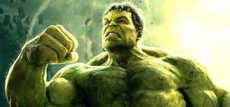

Hulk, es un superhéroe ficticio que aparece en los cómics estadounidenses publicados por Marvel Comics, siendo considerado el personaje más fuerte de la editorial. Fue creado por los escritores Stan Lee y Jack Kirby siendo su primera aparición en The Incredible Hulk #1 publicado en mayo de 1962.